redres: Redress Your Mixed Model Assumptions
R Package Version 0.1.0.9
2019-05-01
Source:vignettes/redres-vignette.Rmd
redres-vignette.RmdIntroducing redres
redres stands for random effect diagnostic residuals
This package is meant to be a supplemental package to lme4.
Overview
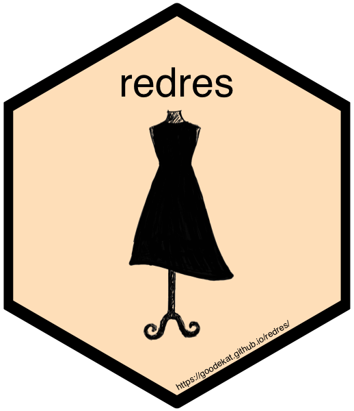
The Merriam-Webster dictionary defines redress as “to set right”. When we assign a linear mixed model to data, we assume (1) independence of our observations, (2) a linear relationship between the response and the explanatory variables, (3) constant variance and (4) normality of the error term. By inspecting our residuals we can diagnose erronous assumptions and missing structure, allowing us to set right the more egregious misspecifications. No model is perfect, but our residuals are a first line of defense against an inaccurate model and consequently poor inference.
Package Structure
redres contains various functions that provide different ways to assess model assumptions for linear mixed models fit using lmer. For a user who wants to obtain the residual value for each observation in their data set, the function redres allows the user to input a model and specify one of six available residual types. The available types are described in detail below. Additionally the package provides several default plots to visually assess the fit of a given mixed model. Calling the plot functions and reading the output are described in the section on plotting. Both, the residual functions and the plotting functions, generate static output within the user’s R session.
Alternatively, user can use the function redres_app that opens a Shiny app to interactively assess their model with package provided tools. Within the Shiny window, the user can view all the plots available in the redres package but with additional interactivity. Or the user can input two models into the app function for model selection.
A brief description of each function is listed below.
- redres: computes and returns residuals given a model and a specified residual type
- plot_redres: creates a plot of residuals versus fitted values for a given residual type
- plot_resqq: creates a normal quantile plot for conditional residuals
- plot_raneff: creates a normal quantile plot for the random effects
- redres_app: opens an interactive Shiny app with
Installation
The package can be installed from GitHub using devtools and then loaded in the normal way.
# Installs redres from GitHub
devtools::install_github("goodekat/redres")# Loads the package
library(redres)Linear Mixed Model Theory and Assumptions
The linear mixed effects model can be written as \[\textbf{Y}=\textbf{X}\boldsymbol{\beta}+\textbf{Z}\boldsymbol{\gamma}+\boldsymbol{\epsilon}\] where
- \(\textbf{Y}\) is an \(n\times 1\) vector of \(n\) response variable observations,
- \(\textbf{X}\) is an \(n\times p\) matrix of \(p\) explanatory variables with \(n\) observations each,
- \(\boldsymbol{\beta}\) is a \(p\times1\) vector of unknown fixed effects parameters,
- \(\textbf{Z}\) is an \(n\times q\) matrix of \(q\) random effect variables with \(n\) observations each,
- \(\boldsymbol{\gamma}\) is a \(q\times1\) vector of unknown random effects, and
- \(\boldsymbol{\epsilon}\) is an \(n\times1\) vector of random errors.
Under this set up, \[E[\textbf{Y}]=\textbf{X}\boldsymbol{\beta} \ \ \ \mbox{ and } \ \ \ Var[\textbf{Y}]=\textbf{ZGZ}'+\textbf{R}=\textbf{V}.\]
It is assumed that \[ \begin{bmatrix} \boldsymbol{\gamma} \\ \boldsymbol{\epsilon} \end{bmatrix} \sim N \begin{pmatrix} \begin{bmatrix} \boldsymbol{0} \\ \boldsymbol{0} \end{bmatrix}, \begin{bmatrix} \textbf{G} & \boldsymbol{0} \\ \boldsymbol{0} & \textbf{R} \end{bmatrix} \end{pmatrix}. \]
Example Data
redres contains a dataset called paprika, which will be used to demonstrate the functions in this vignette. The data is from a study on paprika plants grown under small-scale farming conditions in southern Africa. The original paper on the study can be found here. The study was conducted in 2007 and 2008 in Malawi using a split plot design with five replicates.
The researchers compared 4 fertilizer treatments and 6 plant varieties. The fertilizers were applied to the main plots, and the varieties were assigned to the subplots within a main plot. Within each replicate, 10 plants were randomly chosen from each fertilizer and variety treatment combination and observed over 20 weeks.
The dataset included in redres contains observations from week 4 of the data in 2008. It is stored as a tibble with 1070 rows and 5 variables. The variables are
-
rep: replicate number -
treatment: fertilizer treatment -
variety: plant variety -
plant: plant number (nested within rep, treatment, and variety) -
height: height of the plant (cm)
The first six rows of the data and a histogram of the variable height are shown below.
# Prints the first 6 rows of the paprika data
head(paprika)
#> # A tibble: 6 x 5
#> rep treatment variety plant height
#> <fct> <fct> <fct> <fct> <dbl>
#> 1 1 T1 C1 1 23.5
#> 2 1 T1 C1 2 21.5
#> 3 1 T1 C1 3 31.2
#> 4 1 T1 C1 4 22.1
#> 5 1 T1 C1 5 31.5
#> 6 1 T1 C1 6 26
# Creates a histogram of the height variable
library(ggplot2)
ggplot(paprika, aes(x = height)) +
geom_histogram(bins = 35) +
theme_bw()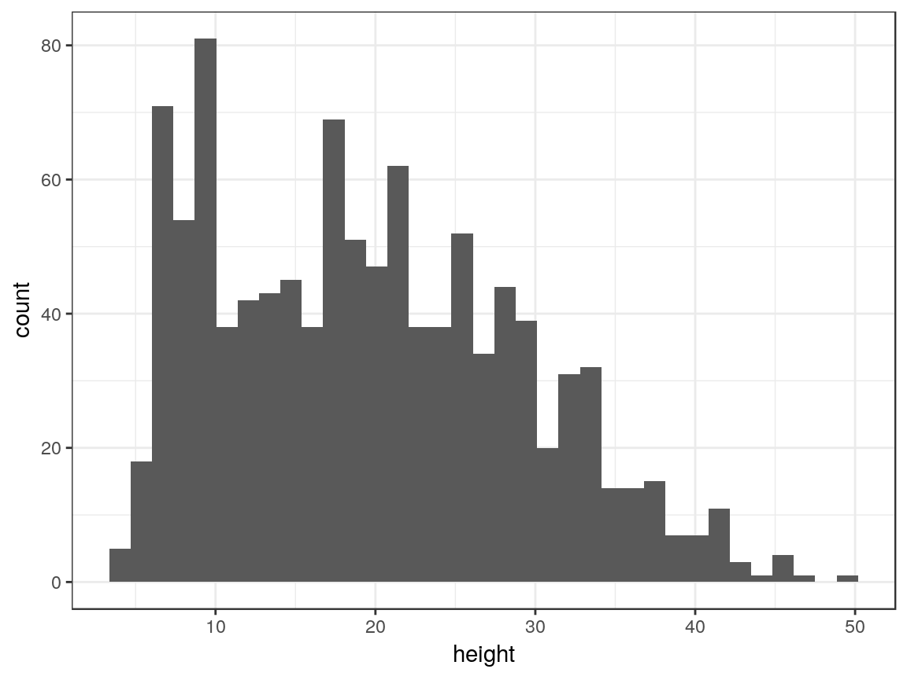
The code below fits a linear mixed effects model to the paprika dataset. This model will be used throughout this vignette. The terms included in the model are described below.
-
repis included as a fixed effect in the model as a blocking variable. -
treatmentis included as a fixed main effect -
varietyis also included as a fixed main effect -
treatment:varietyis included as an interaction term -
rep:treatmentis included as a random effect to account for correlation within a main plot due to the split plot design -
rep:treatment:varietyis also included as a random effect to account for dependency between the 10 plants within a rep and treatment by variety combination
Extracting Residuals
One of the ways to utilize redres is to extract residuals from a model fit using lmer. This can be done using the function in the package named redres to compute residuals based on a specified type.
Residual Types
redres can compute both marginal and conditional residuals for the following types:
- raw
- Pearson
- studentized
It is not necessary to consider all residual types when diagnosing a mixed model. Certain types are beneficial in different situations. For example, conditional residuals are useful for checking the effect of the random terms in the model as opposed to marginal residuals that do not account for the random effects, and studentized residuals are useful for checking constant variance with more complex variance structures. However, we have chosen to include all of these types so that the user may select which type (or types) is (are) useful for their situation. By default, redres returns raw conditional residuals since these are the most appropriate for a wide range of cases.
The formulas for how the residual types are computed in redres are listed below. Note that the manner in which some of the residual types are computed differ from the resid function in lme4. These changes were made so the names of the residual types more intuitive with the computations used.
Raw Residuals
The raw residuals are computed as the observed response values minus the predicted response values where the marginal version does not account for the random effects while the conditional version does. These are computed as follows.
marginal raw residuals \[r^m_i = Y_i-\textbf{x}'_i\widehat{\boldsymbol{\beta}}\]
conditional raw residuals \[r^c_i = Y_i-\textbf{x}'_i\boldsymbol{\widehat{\beta}}-\textbf{z}'_i\widehat{\boldsymbol{\gamma}}\]
Pearson Residuals
The Pearson residuals are computed as the raw residuals divided by the square root of the estimated variance of the response values. Both marginal and conditional versions are available as follows.
marginal Pearson residuals \[r^{m,Pearson}_{i} = \frac{r^m_i}{\sqrt{\widehat{Var}[Y_i]}}\]
conditional Pearson residuals \[r^{c,Pearson}_{i} = \frac{r^c_i}{\sqrt{\widehat{Var}[Y_i|\boldsymbol{\gamma}]}}\]
Studentized
The studentized residuals are computed as the raw residuals divided by the square root of the estimated variance of the raw residuals. Again, both marginal and conditional versions are available.
marginal Pearson residuals \[r_i^{m,std}=\frac{r_i^m}{\sqrt{\widehat{Var}[r_i^m]}}\]
conditional studentized residuals \[r_i^{c,std}=\frac{r_i^c}{\sqrt{\widehat{Var}[r_i^c]}}\]
Note that \[\widehat{Var}[\textbf{r}^m]=\widehat{\textbf{V}}-\textbf{Q} \ \ \ \mbox{ and } \ \ \ \widehat{Var}[\textbf{r}^c]=\textbf{K}\left(\widehat{\textbf{V}}-\textbf{Q}\right)\textbf{K}'.\] The values of \(\textbf{Q}\) and \(\textbf{K}\) are defined as follows by by Gregoire, Schabenberger, and Barrett (1995).
\[\textbf{Q}=\textbf{X}(\textbf{X}'\widehat{\textbf{V}}^{-1}\textbf{X})^{-}\textbf{X}' \ \ \ \mbox{ and } \ \ \ \textbf{K}=\textbf{I}-\textbf{Z}\widehat{\textbf{G}}\textbf{Z}'\widehat{\textbf{V}}^{-1}\]
Usage
The function redres can compute the residuals types defined in the previous section for models fit using lmer.
Inputs
-
model: A model fit usinglmerfor which the residuals will be computed. -
type: A character string identifying the type of residual that will be computed. By default, the raw conditional residuals are returned. The following are the options available for type.-
"pearson_cond": Pearson conditional residuals -
"pearson_mar": Pearson marginal residuals -
"raw_cond": raw conditional residuals (default) -
"raw_mar": raw marginal residuals -
"std_cond": studentized conditional residuals -
"std_mar": studentized marginal residuals
-
See the section on residual types for details on how the residuals are computed and their purpose.
Output
-
redresreturns a vector of residuals according to the type specified in the order that the data observations are input intolmer.
Functionality
The code below demonstrates the use of redres to compute several types of residuals from the model m. These residuals are put into a dataframe and joined with the paprika data.
# Computes the default residuals (raw conditional)
raw_cond <- redres(m)
# Computes the Pearson marginal residuals
pearson_mar <- redres(m, type = "pearson_mar")
# Computes the studentized conditional residuals
std_cond <- redres(m, type = "std_cond")
# Joins the residuals to the paprika data
paprika_plus <- cbind(paprika, raw_cond, pearson_mar, std_cond)
# Prints the head of the dataframe
head(paprika_plus)
#> rep treatment variety plant height raw_cond pearson_mar std_cond
#> 1 1 T1 C1 1 23.5 -0.8171447 0.28484517 -0.1476290
#> 2 1 T1 C1 2 21.5 -2.8171447 0.04144796 -0.5089579
#> 3 1 T1 C1 3 31.2 6.8828553 1.22192446 1.2434874
#> 4 1 T1 C1 4 22.1 -2.2171447 0.11446712 -0.4005593
#> 5 1 T1 C1 5 31.5 7.1828553 1.25843404 1.2976867
#> 6 1 T1 C1 6 26.0 1.6828553 0.58909169 0.3040322The user can then use these residuals as desired. For example, the user could make their own plots or perform tests on the residuals. The code below performs a Shapiro-Wilk test for normality on the raw conditional residuals and creates histograms of the three residual types.
# Performs a test for normality on the raw conditional residuals
shapiro.test(paprika_plus$raw_cond)
#>
#> Shapiro-Wilk normality test
#>
#> data: paprika_plus$raw_cond
#> W = 0.99184, p-value = 1.214e-05
# Loads helpful libraries
library(dplyr)
library(tidyr)
# Creates histograms of the residual types
paprika_plus %>%
gather(key = "type", value = "residual", 6:8) %>%
ggplot(aes(x = residual)) +
geom_histogram(bins = 30) +
facet_grid(. ~ type, scales = "free") +
theme_bw()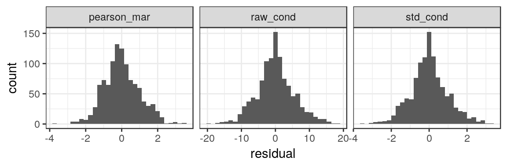
Plotting Residuals
The package includes three plot functions that allow the user to visually assess the general assumptions of a linear mixed model (using ggplot2 graphics).
-
plot_redres: creates a plot of the residuals versus the fitted values or model variables -
plot_resqq: creates a normal quantile plot of the residuals -
plot_ranef: creates a normal quantile plot of the random effects
Plot Types
redres makes use of two types of plots (residual and quantile plots) to assess the model assumptions. How these plots are created and used are described below.
Residual Plots
Plots of the residuals by either the fitted values or explanatory variables (covariates) are used to verify linearity and constant variance. If no curvature or additional linear trends are identified in the residual plot, we say that the linear form is a reasonable assumption. To assess our variance assumptions, we are looking for constant variance. Here using a scaled residual, either the studentized or Pearson, is necessary to account for additional variance structures modeled outside of the error term. We want the vertical spread of the residuals to be approximately the same for all x-axis values.
Residual plots can be called using the plot_redres function. The user has the ability to specify either fitted values or a explanatory variable from the model. Additionally any of the six types of residuals can be used in the plot.
Quantile plots
Quantile plots are used to verify visually if data follows are particular distribution. Data points are plotted along the quantiles of the assumed distributed. The data is expected to follow an approximately straight line, at least along the middle quantiles. The points are assessed for any extreme curvation that would indicate a departure from the assumed distribution. Typically curvature at the extreme ends of the quantiles (around 0 and 1) are ignored as data is sparse here and distributions behave more erratically at the boundaries of the parameter space. We have added confidence bands to guide the user.
The function plot_ranef plots each random effect vector along the normal quantiles. From the assumptions of the linear mixed model, each random effect specified is assumed to follow a normal distribution. Therefore, these plots can be used to assess if this assumption is met. Note that the number of plots generated by this function will vary for each model, with the number of plots being the number of random effects.
From above we can see that the error term is assumed to follow a normal distribution as well. The function plot_resqq provides a normal quantile plot with confidence bands for the raw conditional residuals. See above for a description of the raw conditional residuals (type = raw_cond).
Usage
plot_redres
The function plot_redres is included in the package to allow for the easy creation of a residual plot using ggplot2 for a linear mixed model fit using lmer. plot_redres allows the user to specify any residual type to be plotted on the y-axis including those not provided by lme4.
Inputs
-
model: A model fit usinglmerfor which the residuals will be computed. -
type: A character string identifying the type of residual that will be computed. The same options available withredresare available forplot_redres. By default, the conditional raw residuals are plotted. -
xvar: A character string identifying the variable to be plotted at the x-axis. By default, the fitted values are plotted on the x-axis.
Output
- A
ggplot2object of a scatterplot of the model residuals of the type specified versus the specified x-variable.
Functionality
The code below shows how to create the most basic plot using plot_redres. By inputting the model m, a plot of the conditional raw residuals versus the fitted values is returned.
# Creates the default residual plot
plot_redres(m)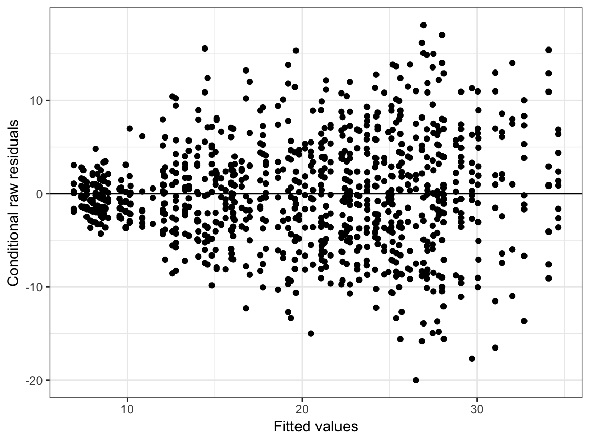
Here we see that while there does not appear to be any linear trend in our data, there is the classic “fan” shape indicating inconstant variance. As the fitted values increase, the vertical spread of the residuals also decreasing. The lack of any other form in the residuals suggests that the linear form assumption is reasonable. We do want to try alternative model formulations in order to address the inconstant variance and then we would need to reassess linearity for the new model.
Perhaps additionally we are interested in the marginal effect of variety, so we want to see the residuals by variety of paprika planted. The plot below suggests that variety does not provide us with extra structure for modeling height.
# Residual plot of raw conditional residuals against variety fixed effect.
plot_redres(m, xvar = "variety")The type of residuals can be changed using the type option as shown in the code below.
# Creates the residual plot with studentized marginal residuals
plot_redres(m, type = "std_mar")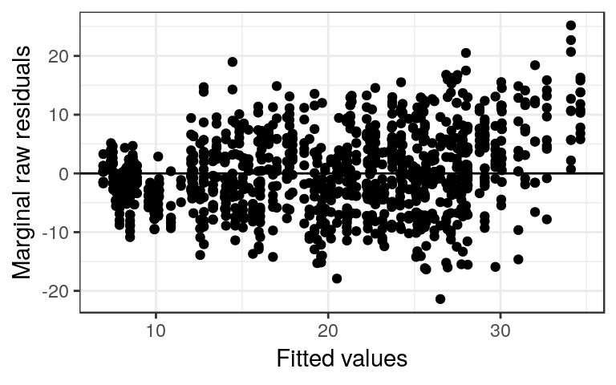
We notice in the marginal residuals an upward trend as the fitted values increase. From our experimental design we suspect that this trend might be related to the replications. When we plot the residuals now by replication ID we see the same upward trend as replication ID increases. If we plot by treatment we do not see this trend.
plot_redres(m, type = "std_mar", xvar = "rep")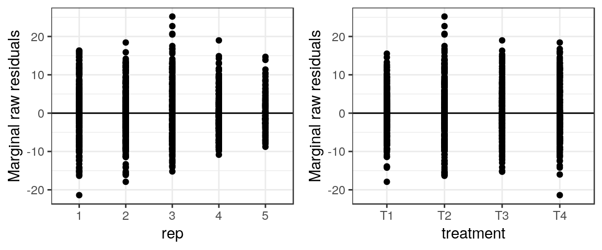
plot_redres(m, type = "std_mar", xvar = "treatment")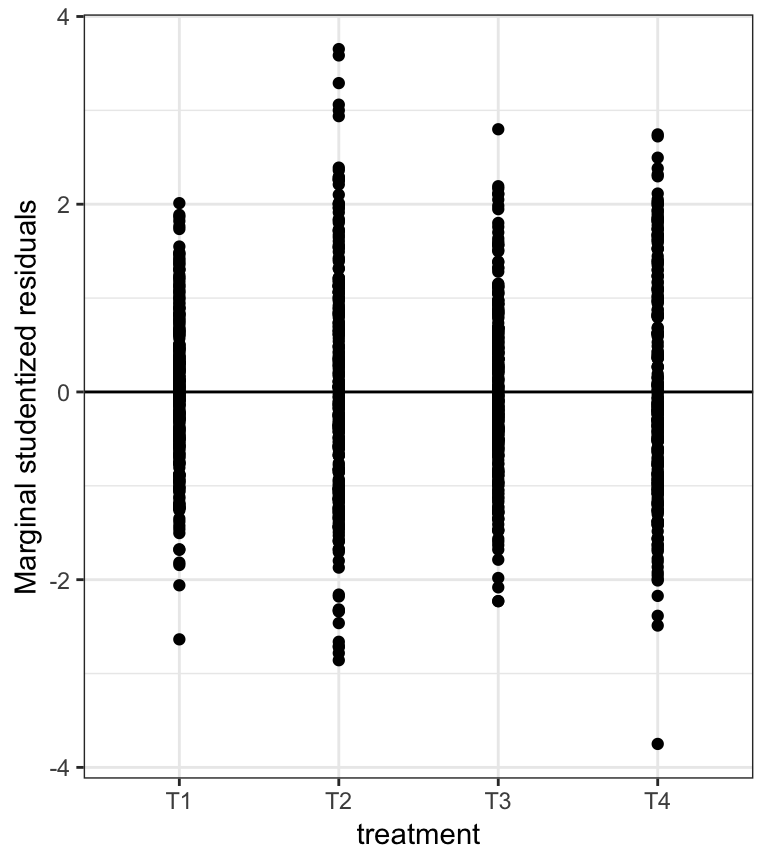
All plots created using the redres package are formatted to use theme_bw from ggplot2. However, since plot_redres returns a ggplot object, it is possible to use functions provided by ggplot2 to adjust the formatting of the plot.
# Applies ggplot2 formatting functions to the output from plot_resid
library(ggplot2)
plot_redres(m, type = "pearson_cond") +
theme_classic() +
labs(title = "Residual Plot")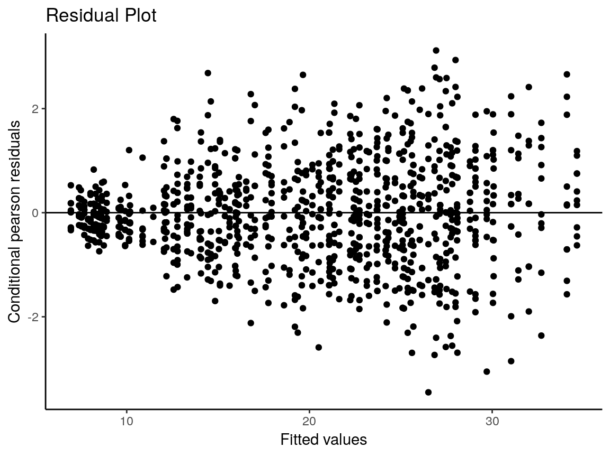
plot_resqq
Inputs
-
model: A model fit usinglmer.
Output
- A
ggplot2object of a normal quantile plot for the raw conditional residuals with normal theory 95% confidence bands.
Functionality
We can check our normal assumption on the error terms for our paprika model using plot_resqq.
plot_resqq(m)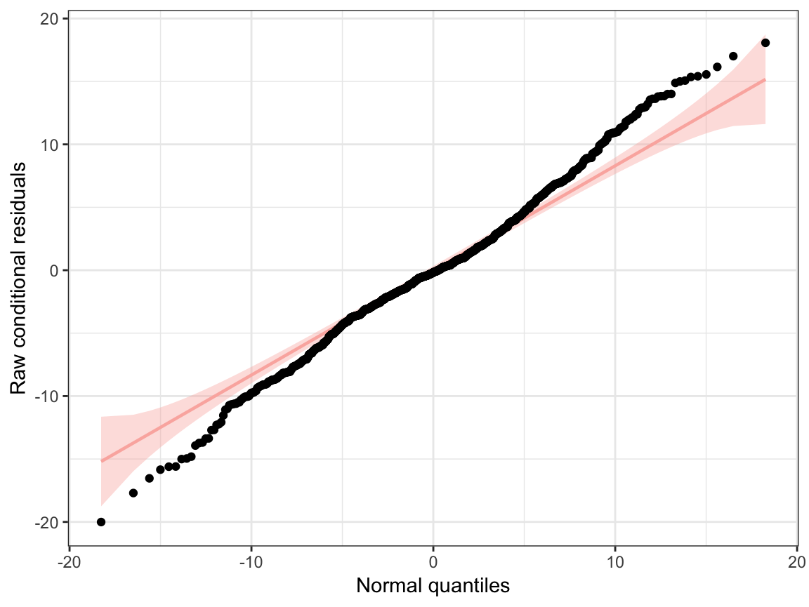
From the quantile plot, we see that along the middle of the distribution (around zero) the points fall in roughly a straight line with no S-shaped curvature. Even though there are some points falling outside the confidence bands at the tails of the distribution - the extreme values of -20 and 20 - we still would consider the normal assumption reasonable. It is not uncommon to see outliers near the tails where the probability decreases.
plot_ranef
Inputs
-
model: A model fit usinglmer.
Output
- A grid of normal quantile plots with normal theory 95% confidence bands in the
ggplot2framework for all random terms in the model.
Functionality
We now check our normal assumption on the random effects for our paprika model using plot_ranef.
plot_ranef(m)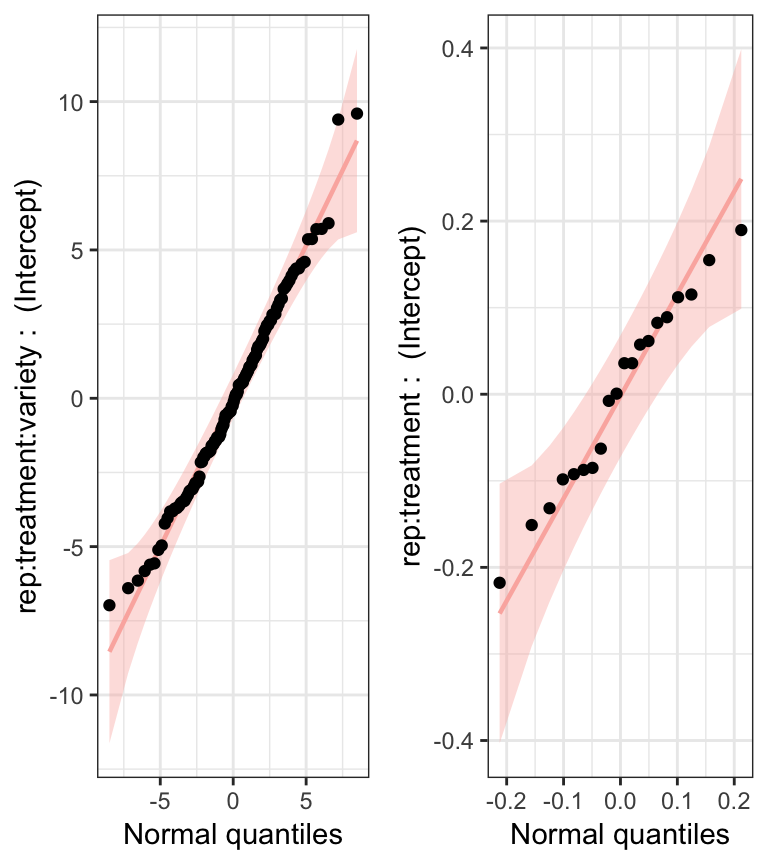
Our model m had two random effects - a random intercept for \(rep \times treatment \times variety\) and another random intercept for \(rep \times treatment\). Therefore, we get a grid of two plots where the random effect term is identified along the y-axis. We see that the points fall along the straight reference line and well-within the confidence bands. We can conclude that the normal assumption for both random effect terms is not violated.
Interacting with Residuals
Shiny App
The function redres_app opens a Shiny app that generates output for the plotting functions plot_redres, plot_resqq and plot_ranef. There are two main tabs in the app, one for the residual plot and another for the quantile plots. The residual plot gives the user a choice of all residual types and x-axis variables. The available x-axis variables are extracted from the input model.
When a list of two models is input into the function redres_app, the app shows a side-by-side comparison of the plots. The user then is able to compare visually the two linear mixed models and conduct model selection.
Usage
redres_app
Inputs
-
model: A model (or two models wrapped in a list) fit usinglmer.
Output
- A
shinyapp.
Functionality
- One fitted model:
The code below shows how to create a shiny app. By inputting the model argument as m, a shiny app window is returned.
# Creates a shiny app with only model
redres_app(m)Two selection widgets shown in the Residual Plot tab are for choosing residual types
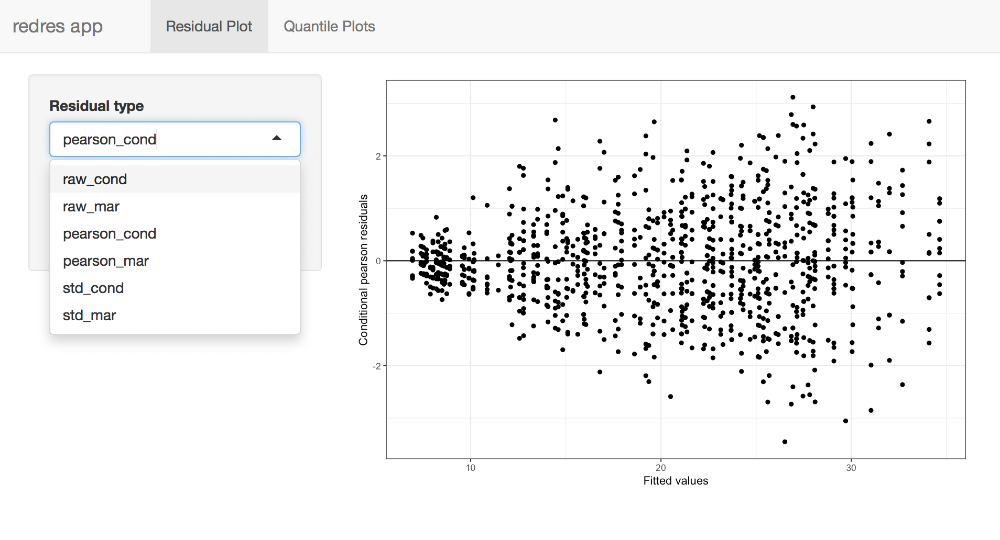
and x-axis variables.
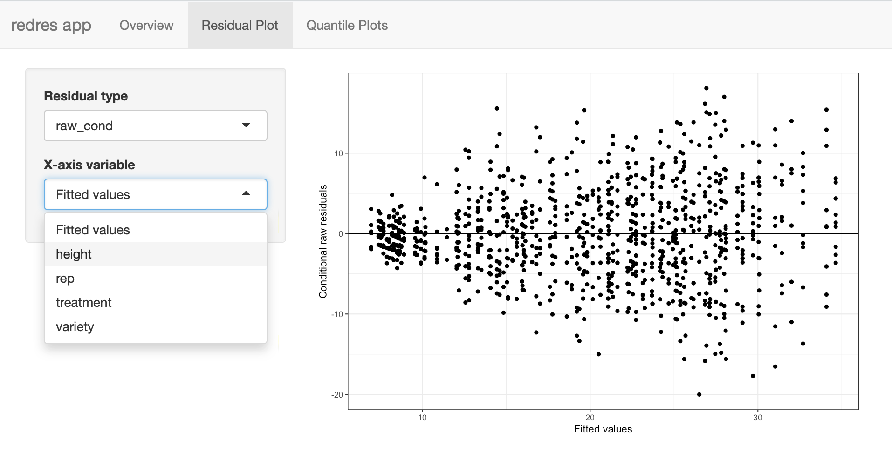
The Quantile Plots tab shown below contains a random effects normal quantile plot

and error term normal quantile plot.
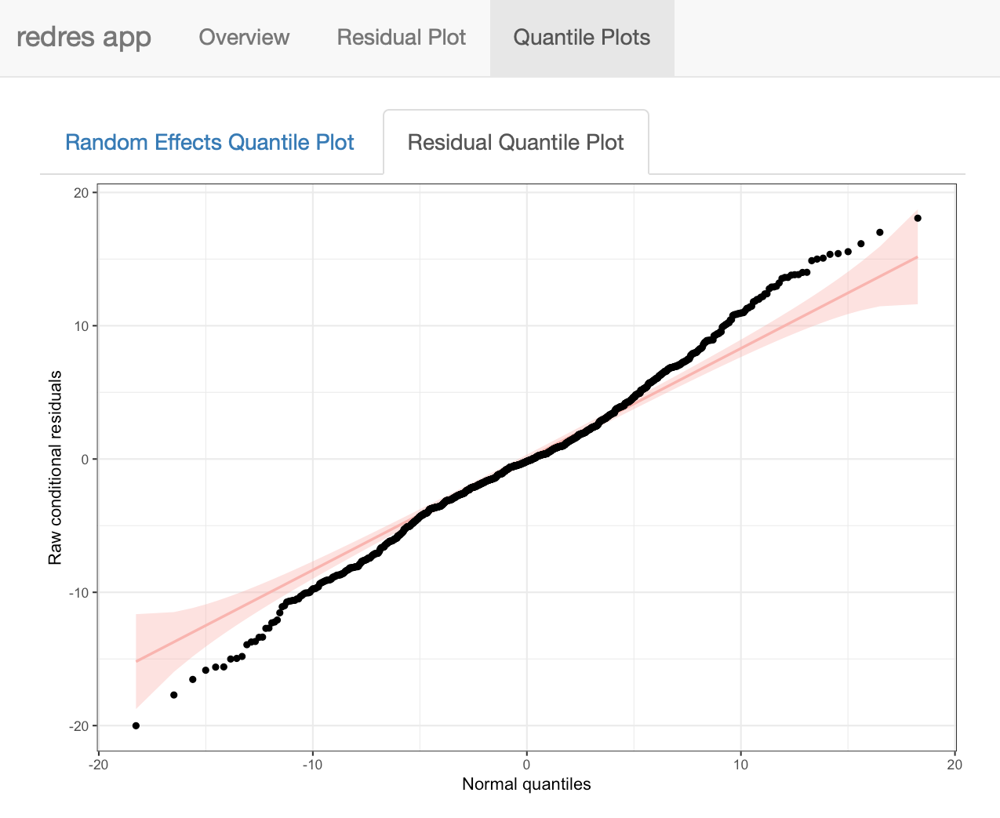
- Two fitted models:
Input the model argument as cmbd which contains a list of two models to do model comparison using shiny app.
# Fit a different linear mixed model with paprika data
m <- lmer(height ~ rep + treatment*variety +
(1|rep:treatment:variety),
data = paprika)
# Fit a linear mixed model after log transform the response
m_log <- lmer(log(height) ~ rep + treatment*variety +
(1|rep:treatment:variety),
data = paprika)
# Combine the two models
cmbd <- c(m, m_log)
# Creates a shiny app with two models
redres_app(cmbd)The plots are shown side by side if there are two inputted models. For variables on the x-axis, different model can have different selected variables.
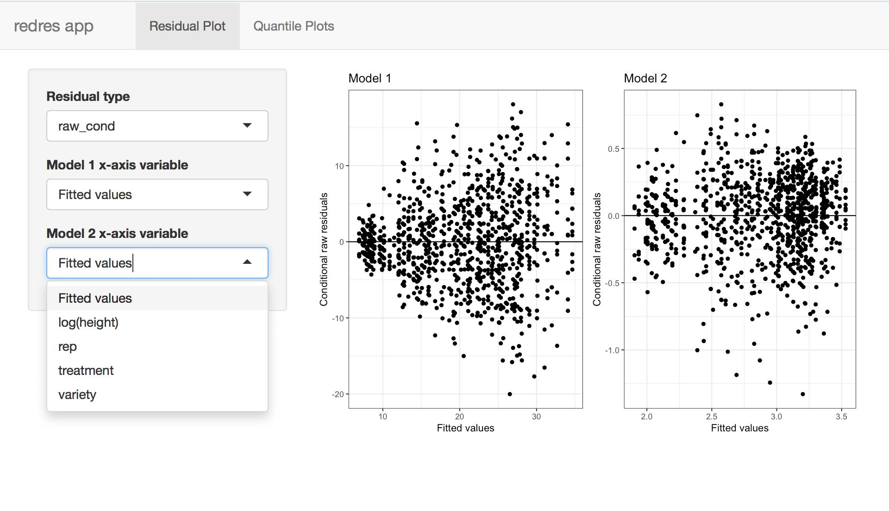
And the following show one of the quantile plots:
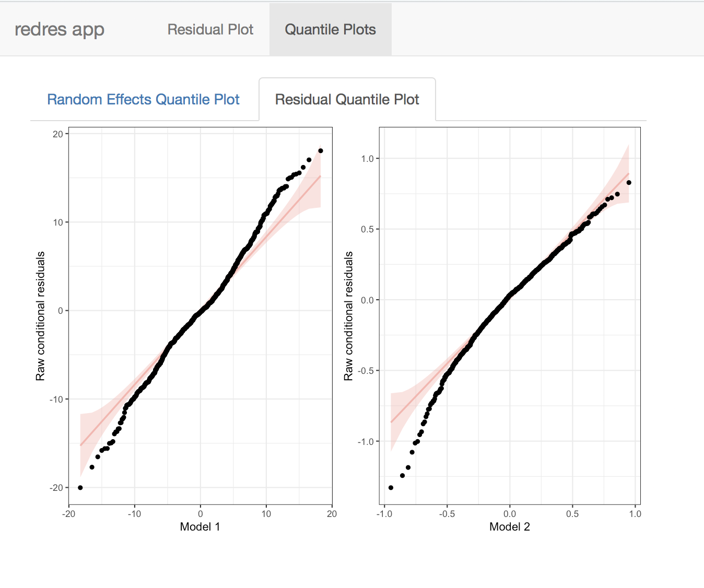